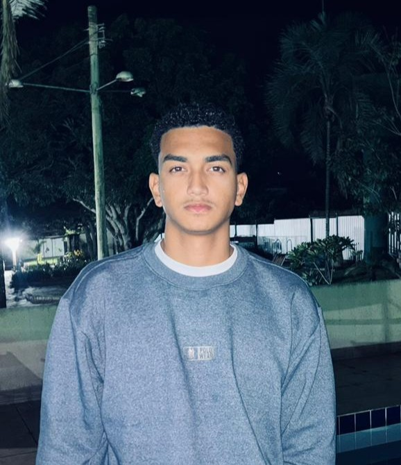
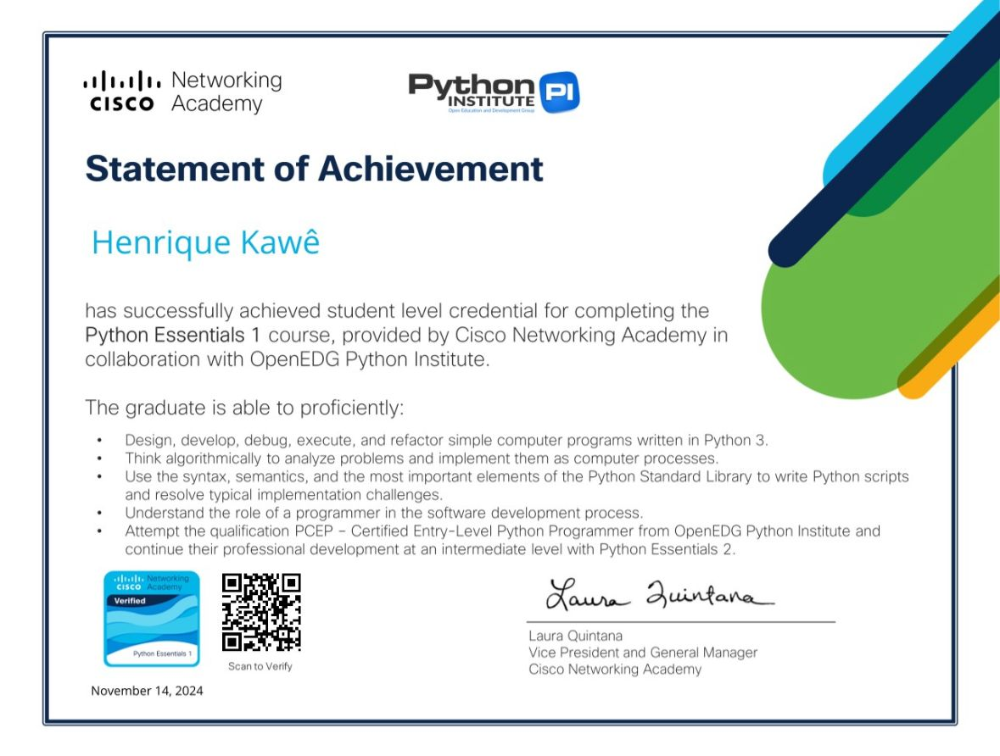
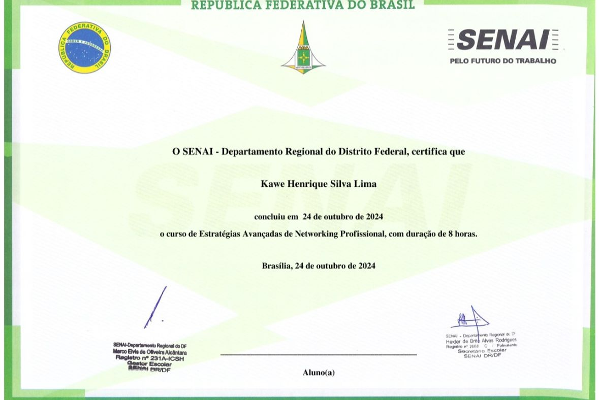
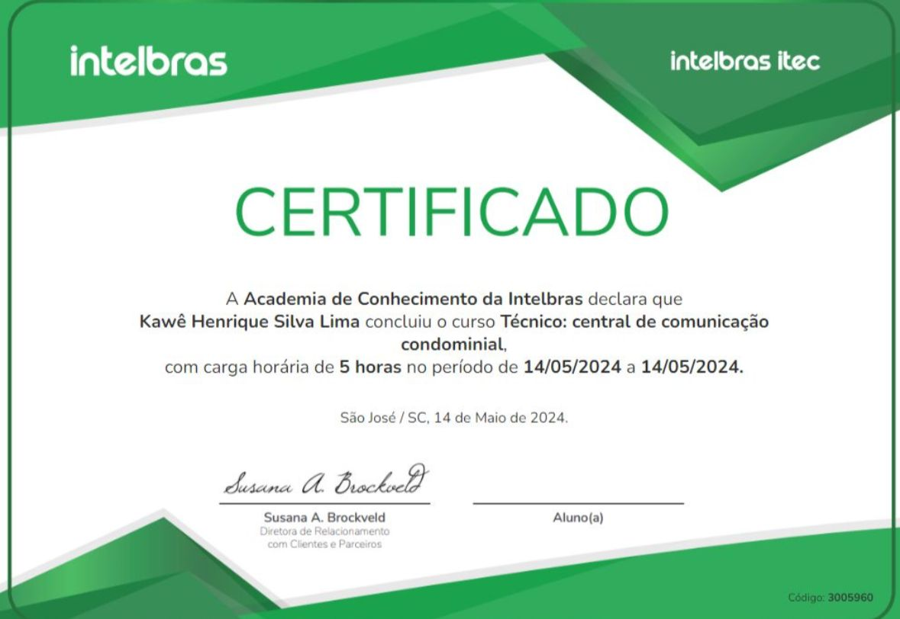
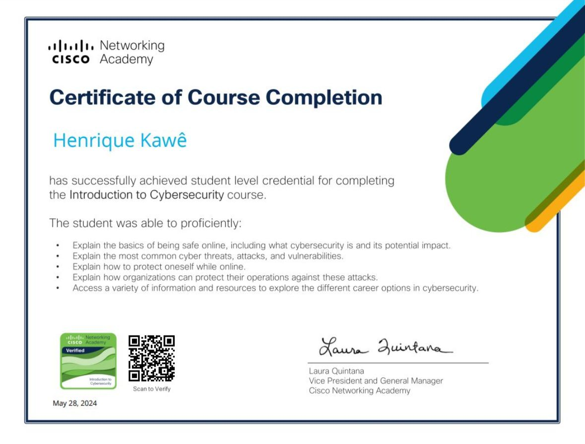
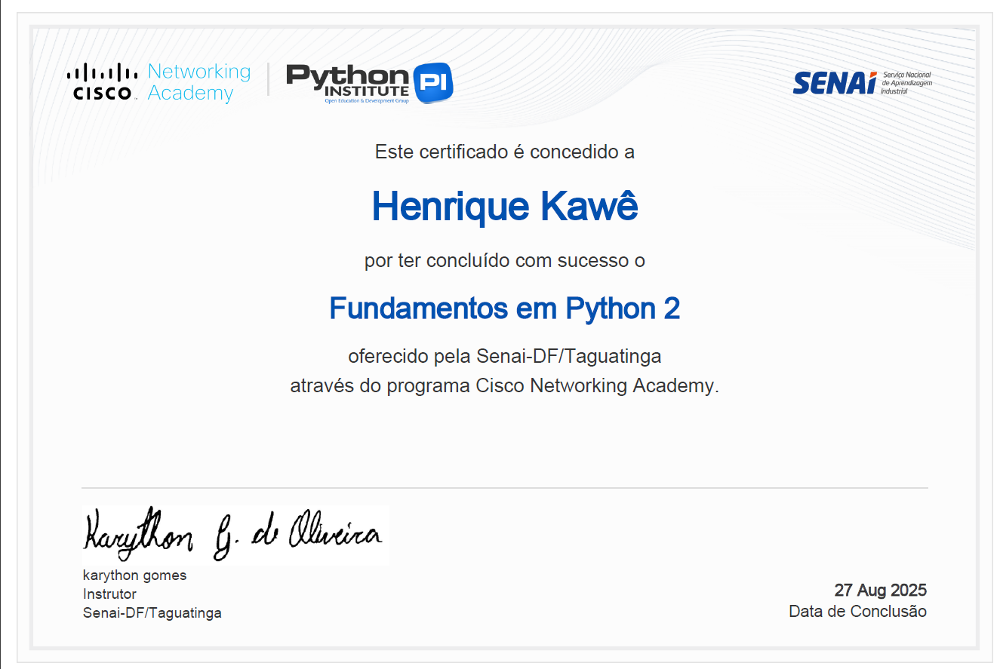
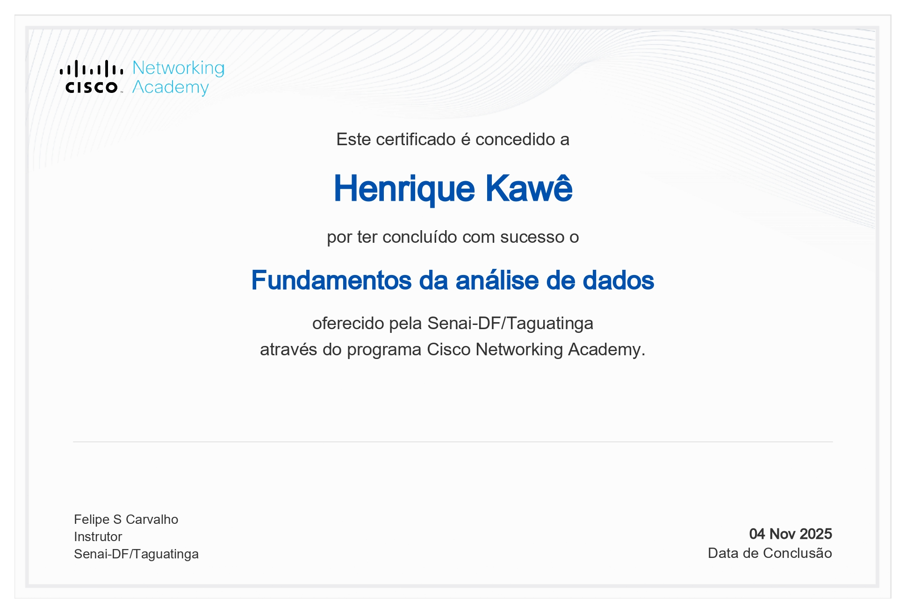

Software Development | Software Engineering
📧 kawehenri@gmail.com
📞 +55 61 98627-9308
📍 Brasília - DF, Brazil
Objective
To work in the information technology field, focusing on software development and system maintenance, applying my technical and academic knowledge. Seeking professional growth through continuous learning, combining practice, innovation, and solid Software Engineering education.
Summary
Software Engineering student at University of Distrito Federal (UDF), with technical training in Systems Development from SENAI-DF and high school completed at SESI-SENAI DF. Currently working as an intern at DF Informática, with experience in development, maintenance, and system support. Proficient in programming logic, databases (MySQL), back-end development (Python, PHP, Laravel), and front-end development (HTML, CSS, JavaScript, React). Interested in Software Engineering, Artificial Intelligence, and curious about Cybersecurity, with focus on best practices and information security. Familiar with Microsoft Office Suite (Word, Excel, PowerPoint). Continuously improving technical skills and English language proficiency.
Behavioral Profile
Empathetic, responsible, and collaborative, with strong communication skills, ease for teamwork, organization, resilience, and ethical conduct. Committed to results, continuous learning, and professional growth.
2025 – Present | Brasília, DF, Brazil
2024 – 2025 | Taguatinga, DF, Brazil
2024 – 2025 | Taguatinga, DF, Brazil
2025 – Present | Brasília, DF, Brazil
Ongoing
Featured Project: Automated Irrigation System — 2025





